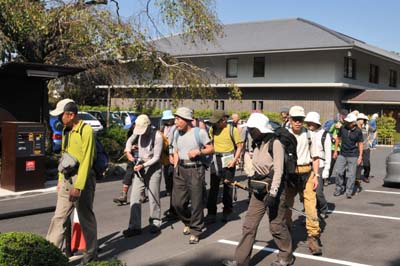
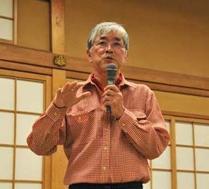
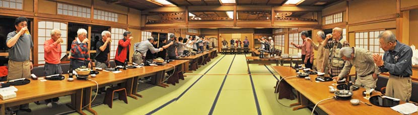
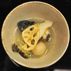
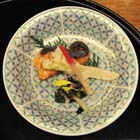

|
|||||||||||||||||||||||||||
|
|||||||||||||||||||||||||||
|
2011年 秋の全国集会（京都） |
| 開 催 日 | ２０１１年１０月２９日〜３０日 | |||
| リーダー | 小山 | |||
| 写真撮影 | 小松崎、小林（義）、小松原、西田 | |||
| ＨＰ制作 | 西田 | |||
| 参加者数 | ３５名 （会員３４名、ゲスト１名） | |||
| アルパインスキークラブの秋の全国集会は、例年低山逍遥である。今年は、日本山岳会京都支部の皆さんのご尽力で、大文字山と愛宕山の登山、それに京料理での懇親会が実現した。 |
| １日目 10月29日(土) |
大文字山登山と懇親会 |
| 今日は、宿舎の南禅会館に集合し、大文字山に登る。帰路に「哲学の道」を散策して南禅会館に戻る。夜は南禅寺順正で懇親会を行う。 |
| 大文字山登山 |
| 「五山送り火」として有名な「大文字焼き」を眺めることはあっても、大文字山に登る機会は少ない。京都ならではの楽しい東山歩きである。 |
|  | A | |
| 今夜の宿舎南禅会館に荷物を置いて、１１：００に出発 | 南禅寺中門を通って三門へ |
 |
| 南禅寺三門の前で集合写真 |
| A |  |
|
| 水路閣は琵琶湖疏水の一環の延長93mの水路橋 明治18年着工のときは、南禅寺境内を通るということで 批判もあったが、今では京都市指定史跡になっている。 |
水路閣を潜りぬけて、京都一周トレイルに入る。 小春日和の木漏れ日の中を、ゆっくり登る。 |
| A | ||
| 急登は結構きついが、木陰に助けられる。 |
大文字山の三等三角点(４６５ｍ) は、見落としやすい位置にある |
| A | ||
| 三角点から下ったところに火床がある。 これは大の字の中心に当る火床である。 |
火床から見る京都の町 中央の緑が吉田山、遥か彼方が明日登る愛宕山 |
| A | ||
| 火床の近くで、京の展望を楽しみながら昼食の後、寛ぐ | ||
| A | ||
| 「大」の字の横の急斜面を下る | ||
| A | ||
| 大文字山を下りきると琵琶湖疎水に出る。 京都では珍しく水が北に向かって流れている。 ここは京大の西田幾太郎が散策した「哲学の道」 |
「哲学の道」の脇にある大豊神社の参道で 見つけた茶屋で飲んだビールの美味かったこと |
| 大文字山登山のGPS軌跡 GPS by Komatsuzaki |
| 懇 親 会 |
| 懇親会は、宿舎南禅会館のすぐ隣の南禅寺順正で１７：３０から始まった。京都支部の皆さんの温かい歓待に、楽しい集いは深夜まで続いた。 |
 |
A | |
| 順正の入口 | 順正の庭を拝見、懇親会は２階で |
| A | ||
| 川合代表の挨拶 | 岡田幹事長の挨拶 |
| A | ||
| 齋藤惇生先生の発声で乾杯 | 田中京都支部長の挨拶 |
|  | A | 上田闊三郎さんのお蔭で、伝統ある順正で懇親会を開催できた。 蘭学者新宮凉庭が、長崎から帰って ここに順正書院という塾を開いたとき、 自分が先に立って弟子たちと一緒に 加茂河原から石を運んで、 流れや池を造ったのだという。 家もその時のままである。 和辻哲郎 古寺巡礼より 順正のコースター → ペリー提督と新宮凉庭と織田信長が乾杯するという、時代を超越したデザインが面白い。 |
| A | A | |||
| 杉山先生から、昭和初期の愛宕ケーブルや愛宕スキー場の珍しい写真が披露された | ||||
|  |
| ３５名の乾杯風景 |
| 湯豆腐懐石料理の数々 |
| A | A |  |
A |  | A | |||
|  |
| ２日目 10月30日(日) |
座禅・粥座と愛宕山登山 |
| 今日は光雲寺で座禅の後、全国集会のメイン・イベントである愛宕山（924m） 登山を行う。 |
| 座禅と粥座 |
| 宿舎の南禅会館を５：００に出発し、早朝座禅のために光雲寺に向かう。 光雲寺は臨済宗南禅寺派に属する禅寺。ＮＨＫの大河ドラマの主人公 「お江 」の娘である東福門院（徳川和子・まさこ）の菩提寺でもある。 |
| A | ||
| 住職さんの法話に続いて、全員で座禅をする 警策＊（けいさく）で肩を打たれるのも心地よかった |
座禅が終り、隣室で短い読経の後、粥座（しゅくざ）を頂く 食前のお祈りは、キリスト教などにも通じるようだ |
| ＊臨済宗では「けいさく」、曹洞宗では「きょうさく」と読むという |
| 愛宕山登山 |
| 座禅と粥座を終えて、一旦宿舎の南禅会館に戻り、身支度をして貸切バスで 愛宕山の清滝登山口に向かった。 |
| A | ||
| 貸切バスで清滝登山口に着き、９：３０に登山開始 | いきなり林の中の急登が続く |
| A | ||
| 昭和初期まであったという愛宕ケーブルと並行する登山道を登る | ||
| A | ||
| 参道から10分ほど入った所に残された廃墟となった頂上駅 宿泊設備もあったという。怪奇映画の撮影に使えそう。 |
愛宕神社惣門（黒門） ここから寺の境内に入る。愛宕神社は神仏習合の山であったが、慶応4年の神仏分離令によって寺は破却された。 |
| 参道の最後の階段の前で集合写真 先発組は参拝を済ませ、後発組は参拝前に、丁度ここで顔を合わせることができた |
| A | ||
| 愛宕神社の鳥居 |
愛宕神社の拝殿 この奥に「火伏せの神」が祀られている本殿がある |
| A | ||
| 帰路は水尾分れから嵯峨水尾方面に下る この下りは一本調子の急坂で、いささか閉口した |
小雨の中、JR山陰線の保津峡駅に辿り着き １５：１７に解散式を行って、無事の下山を祝った |
| 愛宕山登山のGPS軌跡 GPS by Komatsuzaki |
| アルパインスキークラブの2011年秋の全国集会では、大文字山と愛宕山という歴史のある２つの山に登ることができた。しかも京都五山の別格である南禅寺を拠点に実施でき、意義深いものとなった。お世話いただいた京都支部の皆さん、有難うございました。 |